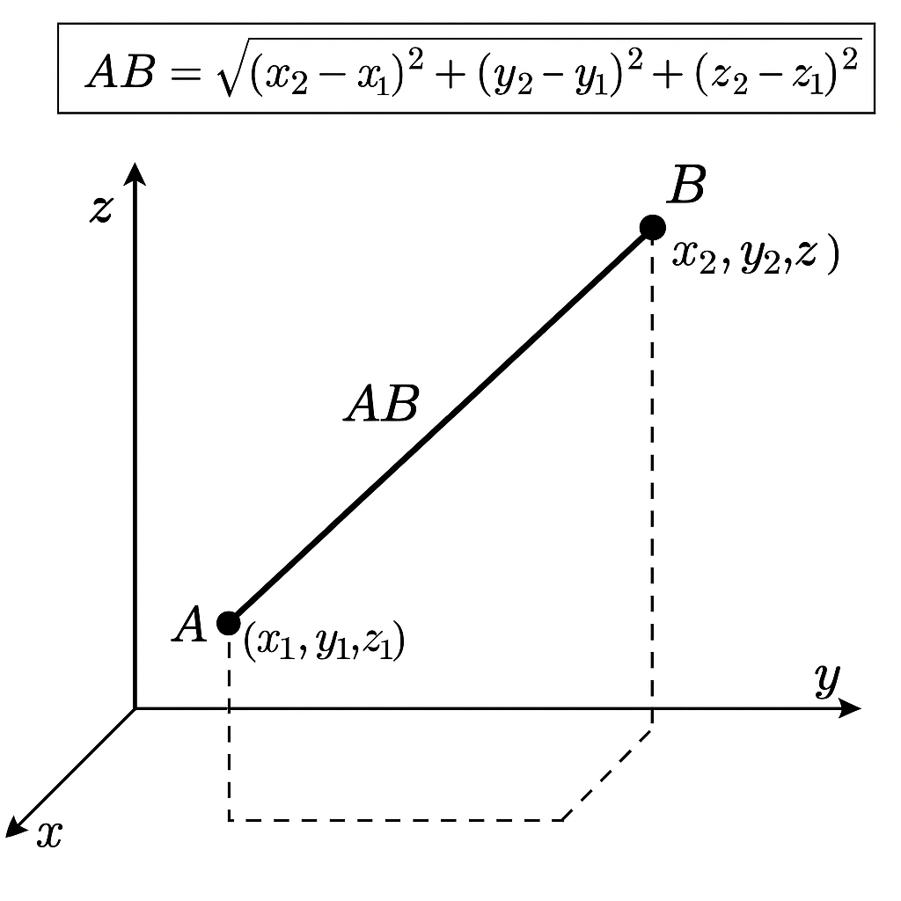

Nama: Deshinta Ayu Ramadhani
NIM: 230210101073
Program Studi: Pendidikan Matematika
Fakultas: Keguruan dan Ilmu Pendidikan
Instansi: Universitas Jember
Dalam geometri tiga dimensi, jarak antara dua titik A(x₁, y₁, z₁) dan B(x₂, y₂, z₂) dapat dihitung dengan rumus:
d = √[(x₂ − x₁)² + (y₂ − y₁)² + (z₂ − z₁)²]
Langkah-langkah:
Contoh:
Diketahui A(2,1,3) dan B(6,4,7)
d = √[(6−2)² + (4−1)² + (7−3)²] = √[16 + 9 + 16] = √41 ≈ 6.40
